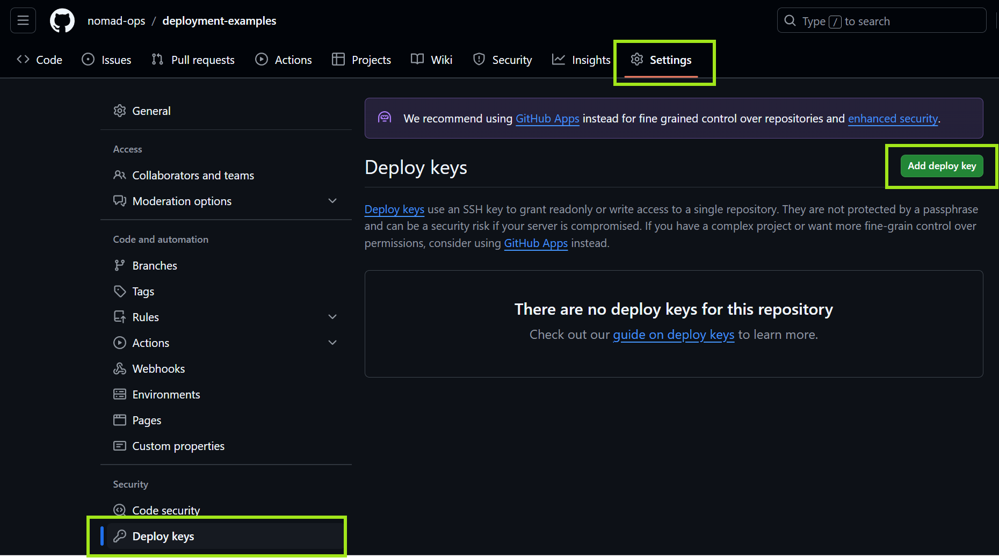
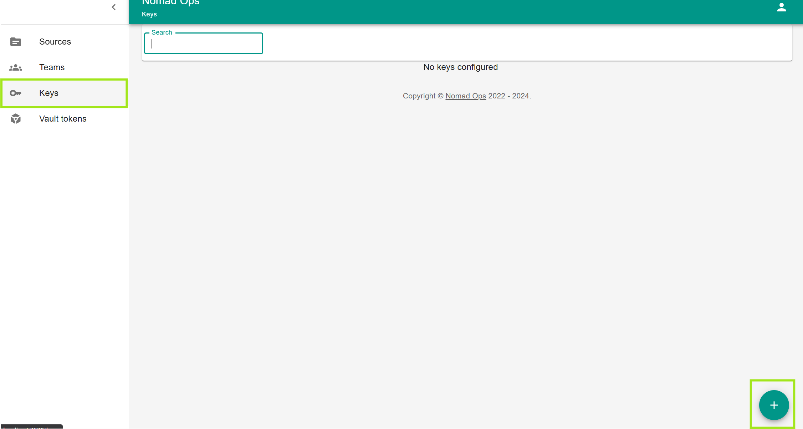
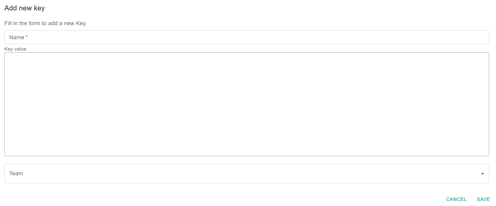
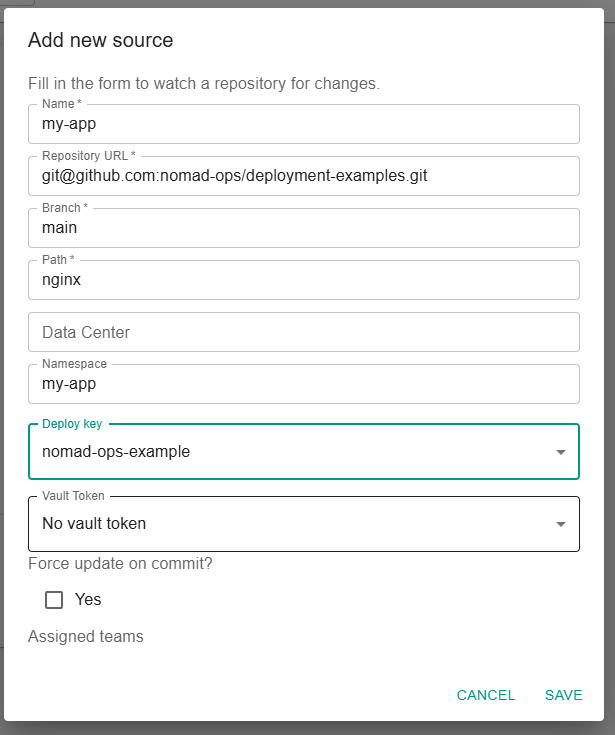
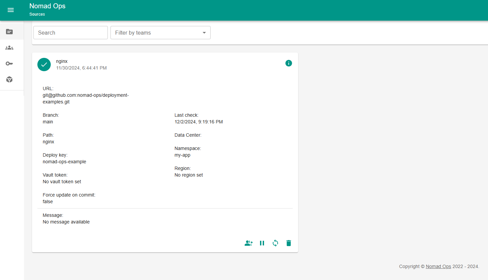
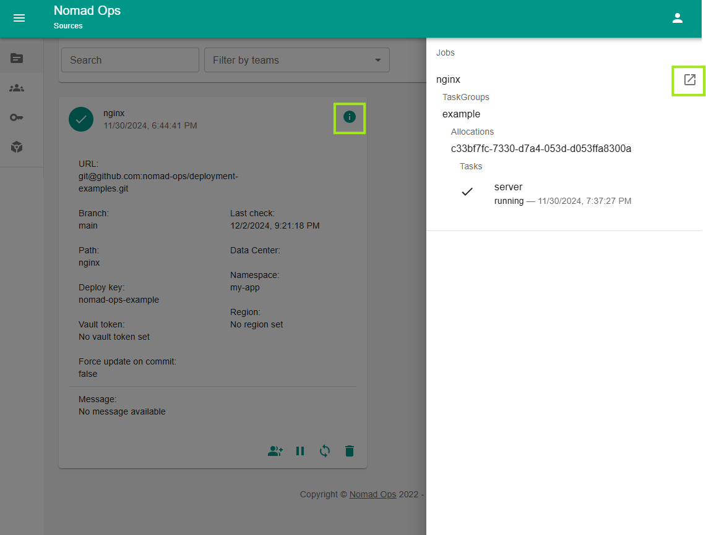
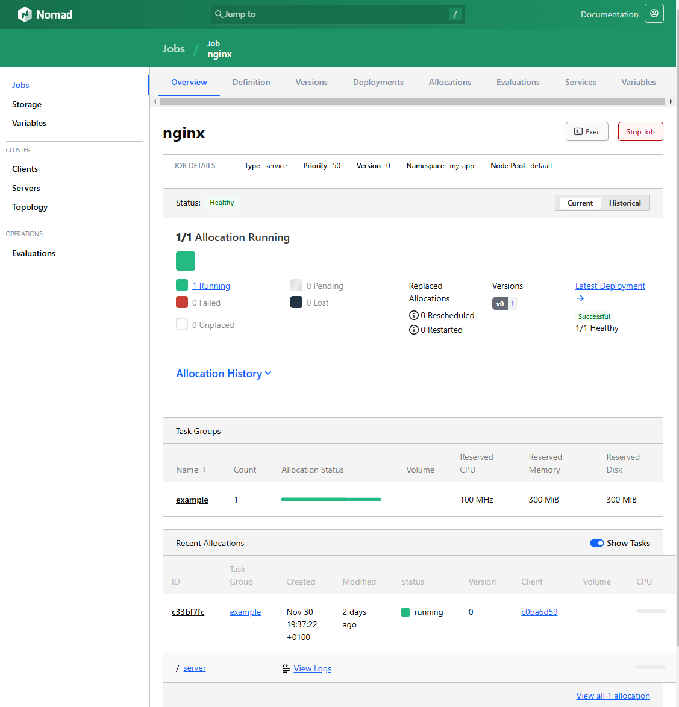

Tutorials¶
Deploy a simple webserver¶
This tutorial will guide you through the process of deploying a simple webserver to your nomad cluster.
Prerequisites¶
- Nomad installed
- Docker installed
- Docker volumes enabled
- Nomad-Ops set up
Steps¶
- Prepare access to your repository
- Prepare the job file in your repository
- Create a new source in Nomad-Ops
- Watch the deployment
Prepare access to your repository¶
You need to have a repository where you can store your job files. This can be a public or private repository. Just make sure that you have access to the repository. Nomad-Ops requires read access to the repository. On private repositories, you need to provide a deploy key.
Follow the instructions of your git provider to register a deploy key. Below you find an example for GitHub.
Prepare a key pair¶
Do not enter a passphrase
ssh-keygen -t ed25519 -C "your_email@example.com"
GitHub: Register the public key¶
Copy the public key.
The public key is stored in
~/.ssh/id_ed25519.pubif you did not change the default location.
- Go to your repository in a webbrowser
- Click on
Settings - Click on
Deploy keys - Click on
Add deploy key

- Enter a title for the key
- Paste the public key into the key field
Switch to Nomad-Ops and create a new deploy key.
- Click on
Keys - Click on the floating
+button in the bottom right corner

- Enter a name for the key
- Copy and paste the private key into the key field
The private key is stored in
~/.ssh/id_ed25519if you did not change the default location.

Prepare the job file in your repository¶
You need to create a job file in your repository.
You can find examples at https://github.com/nomad-ops/deployment-examples
It is not possible to use
filefunctions in the job file. You need to provide the content directly.
Create a new source in Nomad-Ops¶
- Click on
Sources - Click on the floating
+button in the bottom right corner - Fill in the form (see below for an example)

The namespace has to be provisioned before you can create a source. You can do this by running
nomad namespace apply <namespace>.
Once the source is created, you can pause the synchronization using the UI. You can also trigger a sync manually.
The sync is triggered every minute by default. See Configuration for more information.

You can also see additional information about the deployed tasks by clicking on the info icon.

Clicking the link in the slide out will bring you to the Nomad UI.
